Show code
library(tidyverse)
library(here)
library(brms)
library(bayesplot)
library(tidybayes)
library(modelr)
#library(rethinking)
library(rstan)
rstan_options(auto_write = TRUE)
options(mc.cores = parallel::detectCores())library(tidyverse)
library(here)
library(brms)
library(bayesplot)
library(tidybayes)
library(modelr)
#library(rethinking)
library(rstan)
rstan_options(auto_write = TRUE)
options(mc.cores = parallel::detectCores())Loading WaffleDivorce data from rethinking package.
(waffledivorce <- read_csv2(here("data/waffledivorce.csv")))# A tibble: 50 × 13
Location Loc Population MedianAgeMarriage Marriage `Marriage SE` Divorce
<chr> <chr> <chr> <dbl> <dbl> <chr> <dbl>
1 Alabama AL 4.78 253 202 1.27 127
2 Alaska AK 0.71 252 260 2.93 125
3 Arizona AZ 6.33 258 203 0.98 108
4 Arkansas AR 2.92 243 264 1.70 135
5 California CA 37.25 268 191 0.39 80
6 Colorado CO 5.03 257 235 1.24 116
7 Connecticut CT 3.57 276 171 1.06 67
8 Delaware DE 0.90 266 231 2.89 89
9 District o… DC 0.60 297 177 2.53 63
10 Florida FL 18.80 264 170 0.58 85
# ℹ 40 more rows
# ℹ 6 more variables: `Divorce SE` <chr>, WaffleHouses <dbl>, South <dbl>,
# Slaves1860 <dbl>, Population1860 <dbl>, PropSlaves1860 <chr>Let’s calculate summary stats from non-scaled data:
waffledivorce %>%
mutate_at("MedianAgeMarriage", ~.x / 10) %>%
summarise_at(
c("Marriage", "Divorce", "MedianAgeMarriage"),
list(median = median, sd = sd)
)# A tibble: 1 × 6
Marriage_median Divorce_median MedianAgeMarriage_median Marriage_sd Divorce_sd
<dbl> <dbl> <dbl> <dbl> <dbl>
1 197 97.5 25.9 38.0 18.2
# ℹ 1 more variable: MedianAgeMarriage_sd <dbl>We are using standardize function from rethinking package as it returns vector in contrast to scale function. standardize is a wrapper around scale anyway and keeping matrices in our tibbles causes trouble for some downstream functions.
divorce <- waffledivorce %>%
select(Loc, Marriage, Divorce, MedianAgeMarriage) %>%
mutate_at(c("Marriage", "Divorce", "MedianAgeMarriage"), standardize)Here we specify our model by using priors from non-scaled original data.
\[D_i \sim \text{Normal}(\mu, \sigma)\quad\text{[likelihood]}\] \[\mu_i = \alpha + \beta M_i\quad\text{[linear model]}\] \[\alpha \sim \text{Normal}(97.5, 18.5)\quad[\alpha\ \text{prior}]\] \[\beta \sim \text{Normal}(0, 2.5)\quad[\beta\ \text{prior}]\] \[\sigma \sim \text{Normal}(0, 18.5)\quad[\sigma\ \text{prior}]\]
by default, brms provides flat priors for beta coefficients, so minimally we should provide these.
get_prior(formula = Divorce ~ Marriage, data = divorce, family = gaussian()) prior class coef group resp dpar nlpar lb ub tag
(flat) b
(flat) b Marriage
student_t(3, 0, 2.5) Intercept
student_t(3, 0, 2.5) sigma 0
source
default
(vectorized)
default
defaultFirst, we can test if our prior choice is reasonable by sampling only from prior:
Exercise, please choose your (better than default) priors for Intercept, beta and sigma parameters using scaled divorce data and fit the model.
we run the model on priors-only:
priors <- c(
prior("normal(0, 0.2)", class = "Intercept"),
prior("normal(0, 0.5)", class = "b"),
prior("normal(0, 1)", class = "sigma")
)
mod4.0 <- brm(
formula = Divorce ~ Marriage,
data = divorce,
family = gaussian(),
prior = priors,
chains = 3,
file = here("models/mod4.0"),
sample_prior = "only",
file_refit = "on_change"
)Run pp_check multiple times, to get impression of prior-only performance:
pp_check(mod4.0)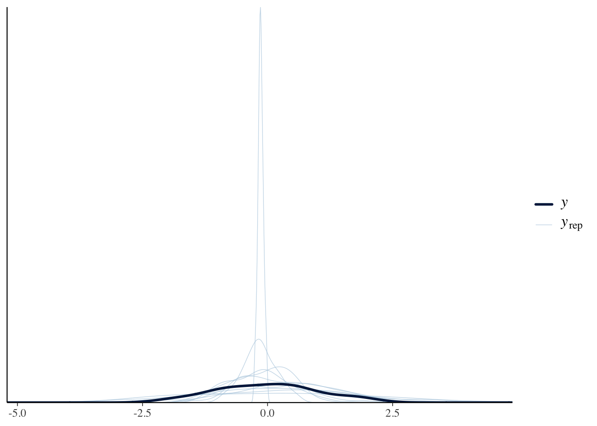
Let’s have a look how well our prior-only model recovers different distribution parameters
y <- as.numeric(divorce$Divorce)
yrep <- posterior_predict(mod4.0)We can check mean and max values in replications:
ppc_stat(y, yrep, stat = "mean", binwidth = 1)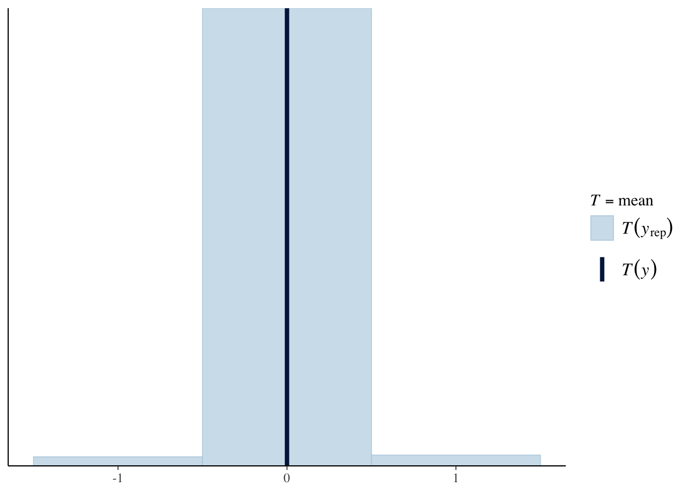
ppc_stat(y, yrep, stat = "sd", binwidth = 1)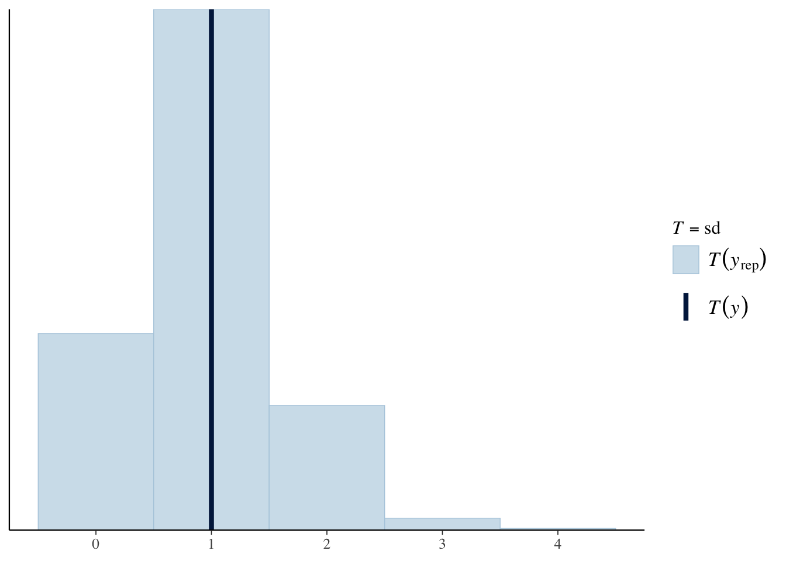
ppc_stat(y, yrep, stat = "max", binwidth = 1)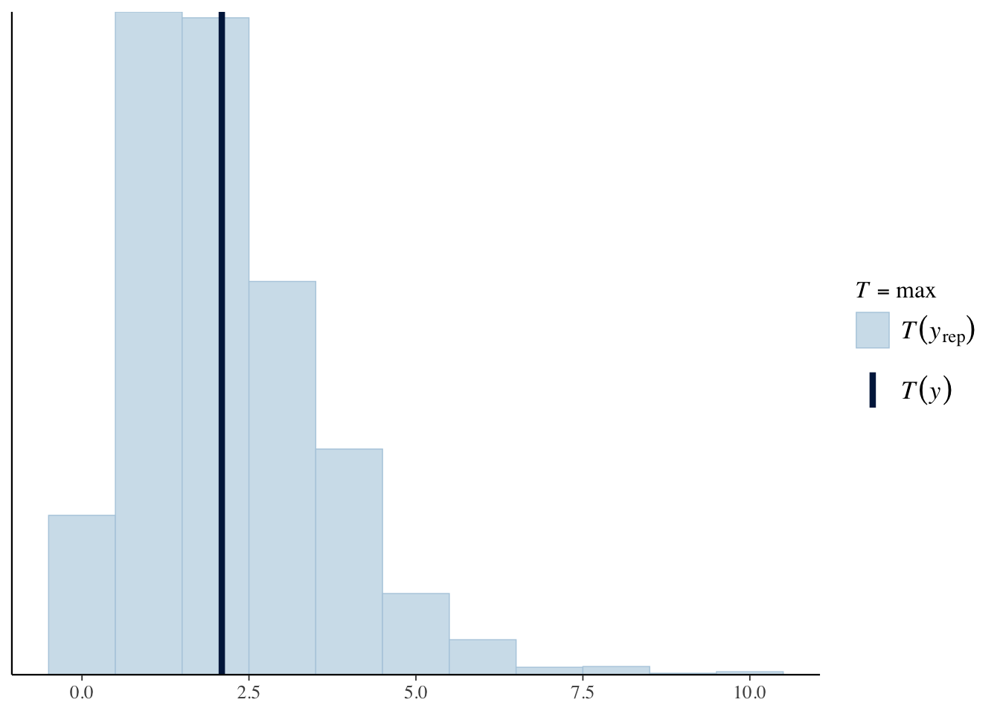
Let’s visualize (keeping only small amount of samples to avoid over-plotting):
samples4.0 <- as.data.frame(mod4.0) %>%
slice_sample(n=50)Here we can see a sample of plausible regression lines, based on our prior-only model:
ggplot() +
geom_point(data = divorce, aes(Marriage, Divorce)) +
geom_abline(data = samples4.0, aes(slope = b_Marriage, intercept = b_Intercept), size = 0.3, alpha = 0.3) +
labs(x = "Marriage rate", y = "Divorce rate") +
scale_x_continuous(limits = c(-3, 3)) +
scale_y_continuous(limits = c(-3, 3)) +
coord_fixed() +
theme_classic()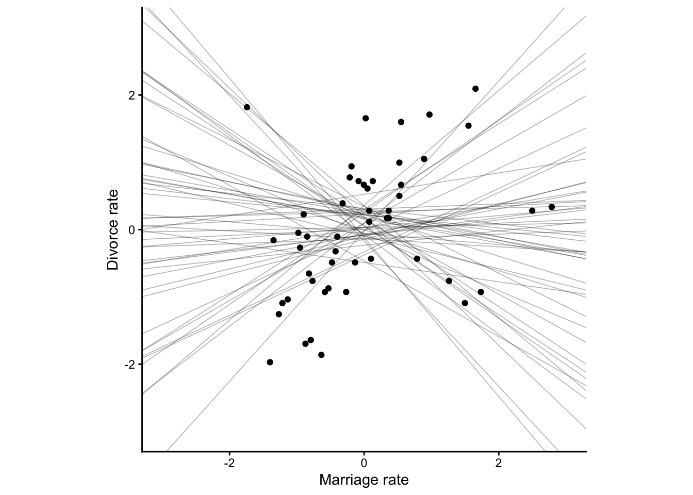
Next, let’s sample fit model with data.
priors <- c(
prior("normal(0, 0.2)", class = "Intercept"),
prior("normal(0, 0.5)", class = "b"),
prior("normal(0, 1)", class = "sigma")
)
mod4.2 <- brm(
formula = Divorce ~ Marriage,
data = divorce,
family = gaussian(),
prior = priors,
chains = 3,
file = here("models/Divorce~Marriage"),
sample_prior = "yes"
)plot(mod4.2)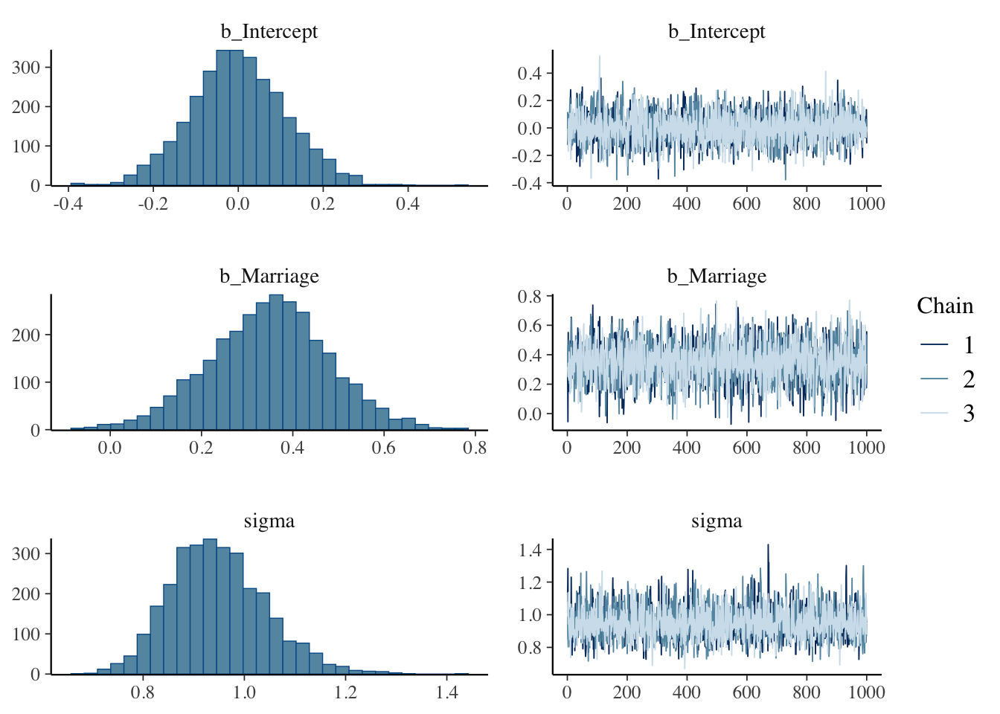
Let’s add residuals and fitted values to our data:
(post_sum4.2 <- divorce %>%
select(Marriage, Divorce) %>%
add_epred_draws(mod4.2) %>%
summarise_at(".epred", mean))# A tibble: 50 × 4
# Groups: Marriage, Divorce [50]
Marriage Divorce .row .epred
<dbl> <dbl> <int> <dbl>
1 -1.74 1.82 20 -0.605
2 -1.40 -1.97 30 -0.486
3 -1.35 -0.158 39 -0.468
4 -1.27 -1.26 24 -0.440
5 -1.21 -1.09 38 -0.422
6 -1.14 -1.04 22 -0.394
7 -0.978 -0.0483 45 -0.339
8 -0.952 -0.268 23 -0.330
9 -0.899 0.226 29 -0.312
10 -0.873 -1.70 32 -0.303
# ℹ 40 more rowscoefs <- fixef(mod4.2)
post_sum4.2 %>%
ggplot(aes(x = Marriage)) +
geom_point(aes(y = Divorce)) +
geom_abline(slope = coefs[2, 1], intercept = coefs[1, 1]) +
geom_segment(aes(xend = Marriage, y = .epred, yend = Divorce), size = 1/3, color = "blue")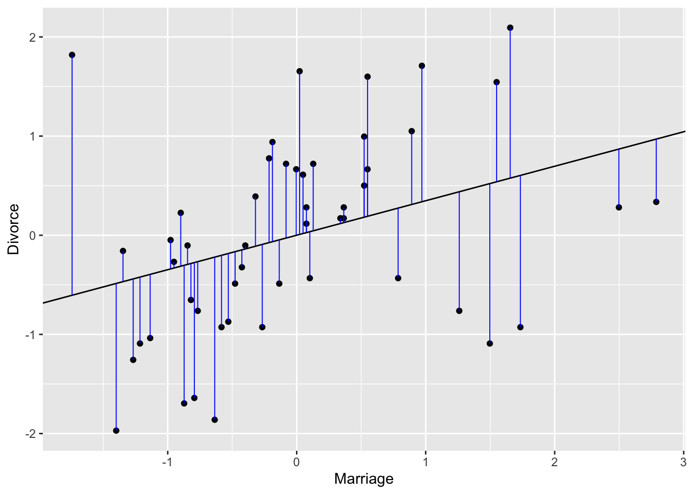
plot(conditional_effects(mod4.2), points = TRUE, ask = FALSE)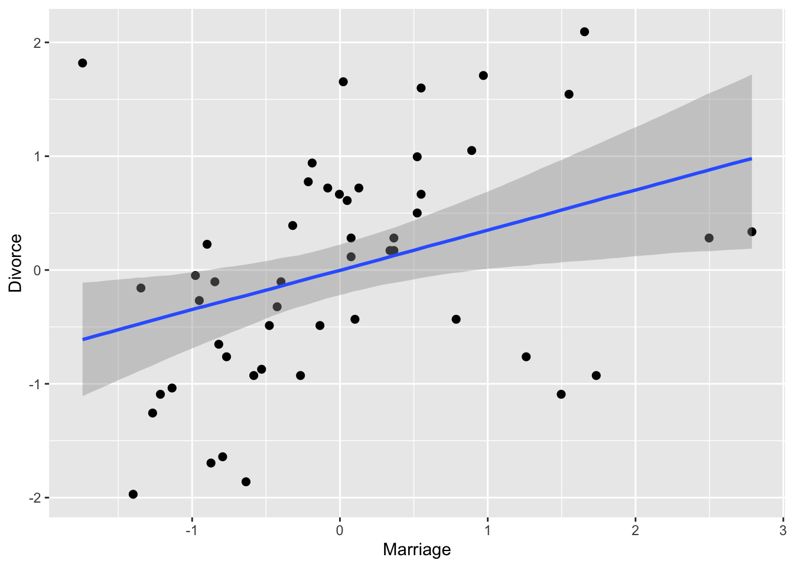
We want to test one-sided hypothesis whether b_Marriage coefficient is bigger than 0.
get_variables(mod4.2) [1] "b_Intercept" "b_Marriage" "sigma" "prior_Intercept"
[5] "prior_b" "prior_sigma" "lp__" "accept_stat__"
[9] "stepsize__" "treedepth__" "n_leapfrog__" "divergent__"
[13] "energy__" We can see that marriage rate predicts divorce rate with very high posterior probability.
(h4.2 <- hypothesis(mod4.2, "Marriage > 0"))Hypothesis Tests for class b:
Hypothesis Estimate Est.Error CI.Lower CI.Upper Evid.Ratio Post.Prob Star
1 (Marriage) > 0 0.35 0.13 0.13 0.56 156.89 0.99 *
---
'CI': 90%-CI for one-sided and 95%-CI for two-sided hypotheses.
'*': For one-sided hypotheses, the posterior probability exceeds 95%;
for two-sided hypotheses, the value tested against lies outside the 95%-CI.
Posterior probabilities of point hypotheses assume equal prior probabilities.Plot shows that most of the posterior distribution of Marriage coefficient lies on positive side.
plot(h4.2, plot = FALSE)[[1]] +
geom_vline(xintercept = 0, linetype = "dashed")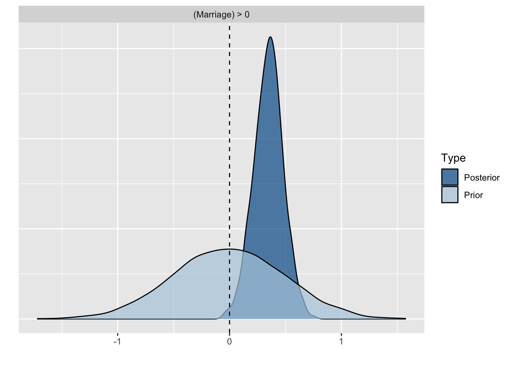
In addition to understanding the estimates, it’s important to check the model fit against the observed data.
Here, we plot predicted values versus observed values at data point level:
divorce %>%
add_epred_draws(mod4.2) %>%
mean_qi() %>%
ggplot(aes(x = Divorce, y = .epred)) +
geom_abline(linetype = "dashed") +
geom_point() +
geom_linerange(aes(ymin = .lower, ymax = .upper)) +
geom_text(data = . %>% filter(Loc %in% c("ID", "UT")),
aes(label = Loc),
hjust = 0, nudge_x = - 0.3) +
labs(x = "Observed divorce",
y = "Predicted divorce",
caption = "Points denote mean and\nline denotes 95% quantile interval") +
coord_fixed() +
theme_classic()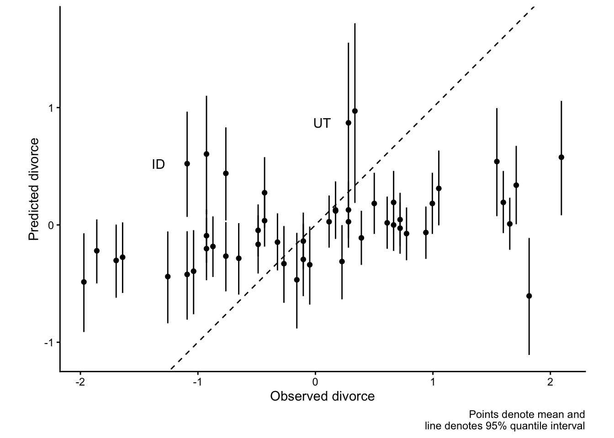
A predictor residual is the average prediction error when we use all of the other predictor variables to model a predictor of interest.
We have two predictors in our model – Marriage and MedianAgeMarriage. Let’s fit two models.
Marriage ~ MedianAgeMarriage.
priors <- c(
prior("normal(0, 0.2)", class = "Intercept"),
prior("normal(0, 0.5)", class = "b"),
prior("normal(0, 1)", class = "sigma")
)
mod4.5 <- brm(
formula = Marriage ~ MedianAgeMarriage,
data = divorce,
family = gaussian(),
prior = priors,
chains = 3,
file = here("models/Marriage~MedianAgeMarriage"),
sample_prior = "yes"
)add_residual_draws(divorce, mod4.5) %>%
mean_qi() %>%
ggplot(aes(MedianAgeMarriage, Marriage)) +
geom_point() +
geom_abline(slope = fixef(mod4.5)[2,1], intercept = fixef(mod4.5)[1,1]) +
geom_segment(aes(x = MedianAgeMarriage, xend = MedianAgeMarriage,
y = Marriage, yend = Marriage - .residual), color = "blue") +
coord_fixed()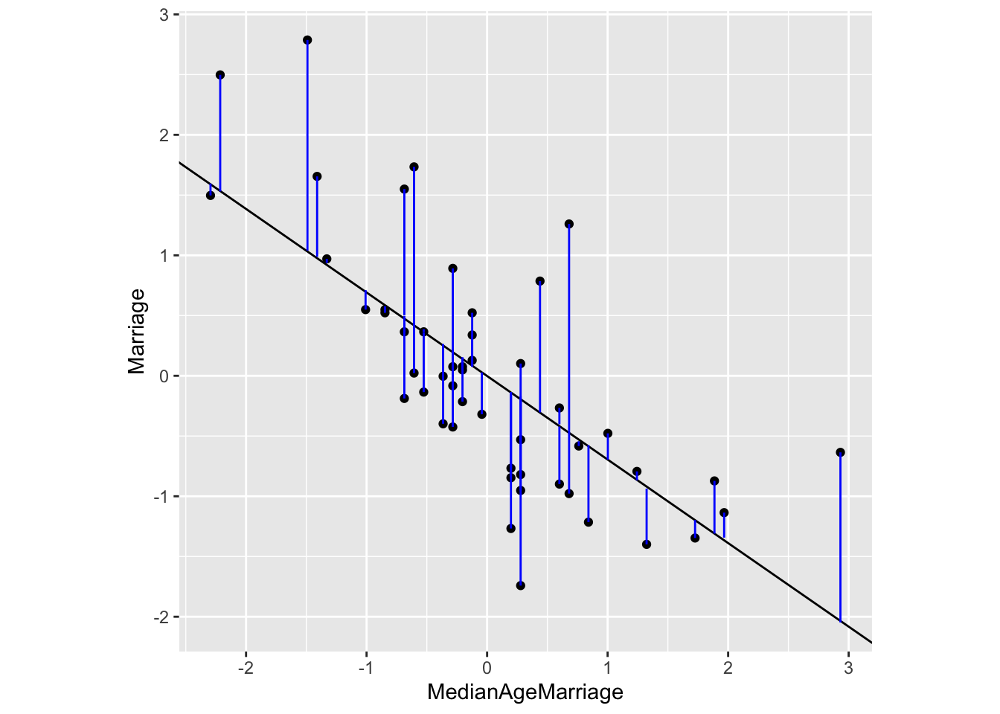
Counterfactual plots display the causal implications of the model. They are called counterfactual (relating to or expressing what has not happened or is not the case), because they can be produced for any values of the predictor variables, even unobserved combinations. Basic use would be to observe how the outcome would change as you change one predictor at a time.
Here we generate data for median age of marriage and keeping marriage rate 0. This is a datapoint-level prediction.
priors <- c(
prior("normal(0, 0.2)", class = "Intercept"),
prior("normal(0, 0.5)", class = "b"),
prior("normal(0, 1)", class = "sigma")
)
mod4.3 <- brm(
formula = Divorce ~ Marriage + MedianAgeMarriage,
data = divorce,
family = gaussian(),
prior = priors,
chains = 3,
file = here("models/Divorce~Marriage+MedianAgeMarriage"),
sample_prior = "yes"
)Here we generate data for marriage rate and keep median age of marriage at 0 (never happens).
tibble(Marriage = seq(from = -3, to = 3, length.out = 30),
MedianAgeMarriage = mean(divorce$MedianAgeMarriage)) %>%
add_predicted_draws(mod4.3) %>%
mean_qi(.prediction) %>%
ggplot(aes(Marriage, .prediction)) +
geom_line() +
geom_ribbon(aes(ymin = .lower, ymax = .upper), alpha = 1/5) +
labs(subtitle = "Counterfactual plot for which MedianAgeMarriage = 0",
y = "Divorce",
caption = "Line denotes model prediction and\nlight gray ribbon denotes prediction 95% qi.") +
coord_fixed() +
theme_classic()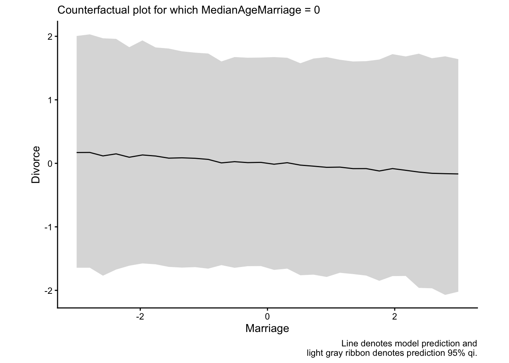
Here we generate data for median age of marriage and keeping marriage rate 0. This is a datapoint-level prediction
tibble(MedianAgeMarriage = seq(from = -3, to = 3, length.out = 30),
Marriage = mean(divorce$Marriage)) %>%
add_predicted_draws(mod4.3) %>%
mean_qi(.prediction) %>%
ggplot(aes(MedianAgeMarriage, .prediction)) +
geom_line() +
geom_ribbon(aes(ymin = .lower, ymax = .upper), alpha = 1/5) +
labs(subtitle = "Counterfactual plot for which Marriage = 0",
y = "Divorce",
caption = "Line denotes model prediction and\nlight gray ribbon denotes prediction 95% qi.") +
coord_fixed() +
theme_classic()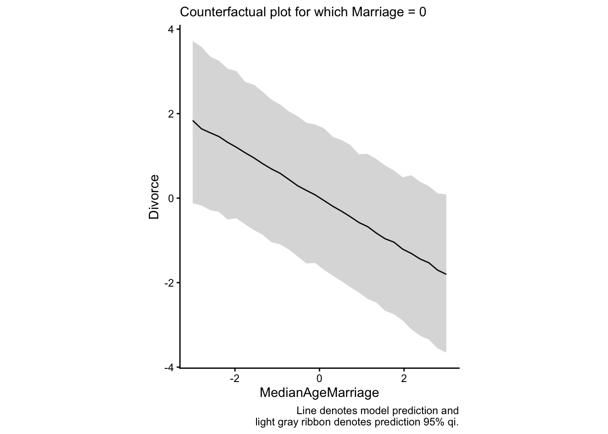
conditional_effects(mod4.3, effects = "MedianAgeMarriage", method = "predict")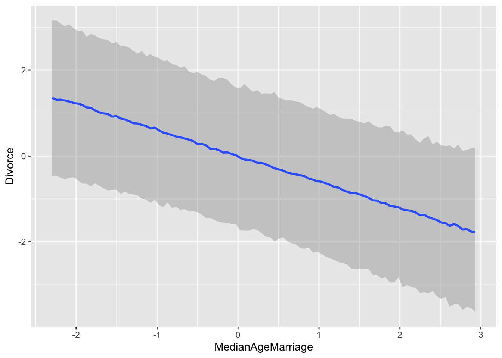
And this is in the level of the predicted mean Divorce rates.
tibble(MedianAgeMarriage = seq(from = -3, to = 3, length.out = 30),
Marriage = mean(divorce$Marriage)) %>%
add_epred_draws(mod4.3) %>%
mean_qi(.epred) %>%
ggplot(aes(MedianAgeMarriage, .epred)) +
geom_line() +
geom_ribbon(aes(ymin = .lower, ymax = .upper), alpha = 1/5) +
labs(subtitle = "Counterfactual plot for which Marriage = 0",
y = "Divorce",
caption = "Line denotes model prediction and\nlight gray ribbon denotes prediction 95% qi.") +
coord_fixed() +
theme_classic()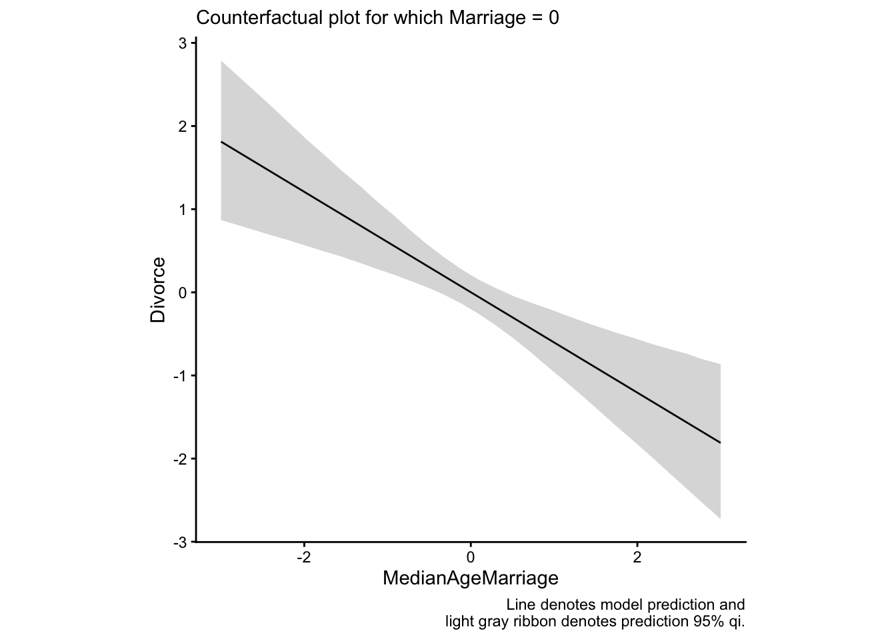
method = fitted is the default.
conditional_effects(mod4.3, effects = "MedianAgeMarriage", method = "fitted")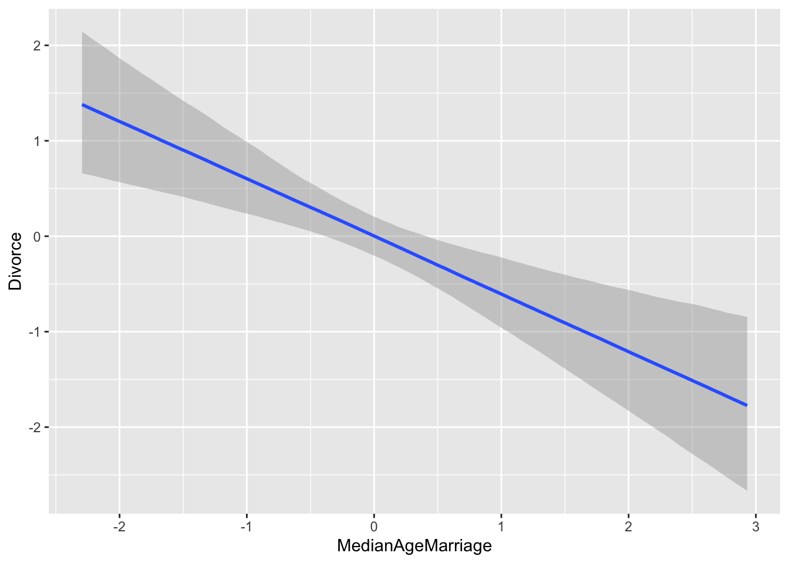
tapmised <- read_delim("data/tapmised/Sheet 3-Table 1.csv",
delim = ";", escape_double = FALSE, trim_ws = TRUE)
tt <- colSums(tapmised[,-1]) %>% as.data.frame() %>% rownames_to_column()
colnames(tt) <- c("yr", "events")
tt <- tt %>% mutate(yr = parse_number(yr))mod.pois <- brm(events~yr, tt, family = poisson(), chains = 3, file = "models/mod.pois")plot(conditional_effects(mod.pois), points=TRUE)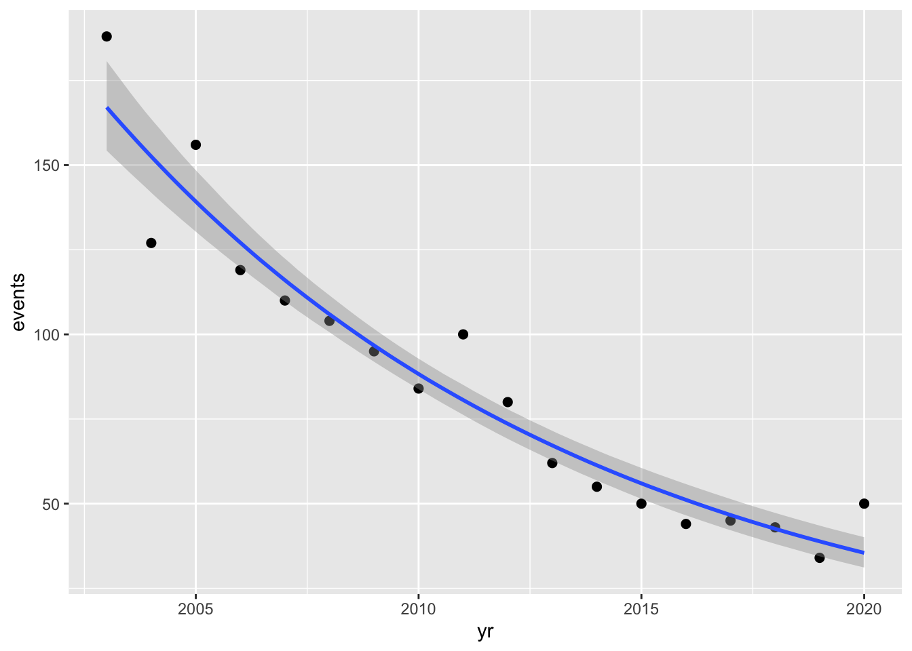
tibble(yr = seq(from = 2002, to = 2025)) %>%
add_epred_draws(mod.pois) %>%
mean_qi(.epred) %>%
ggplot(aes(yr, .epred)) +
geom_line() +
geom_ribbon(aes(ymin = .lower, ymax = .upper), alpha = 1/5) +
theme_classic()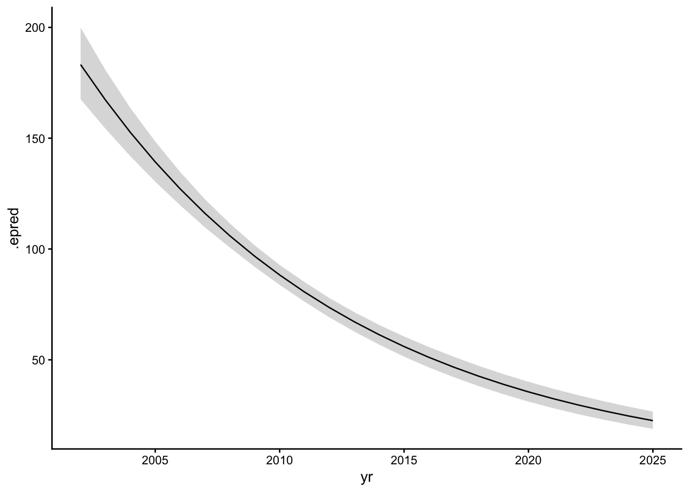
mod.spl <- brm(events~ s(yr), tt, family = poisson(), chains = 3, file = "models/mod.spl")plot(conditional_smooths(mod.spl))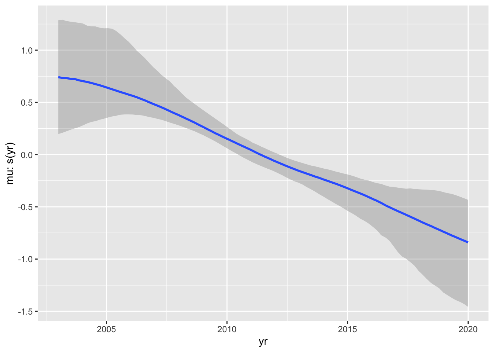
conditional_effects(mod.spl)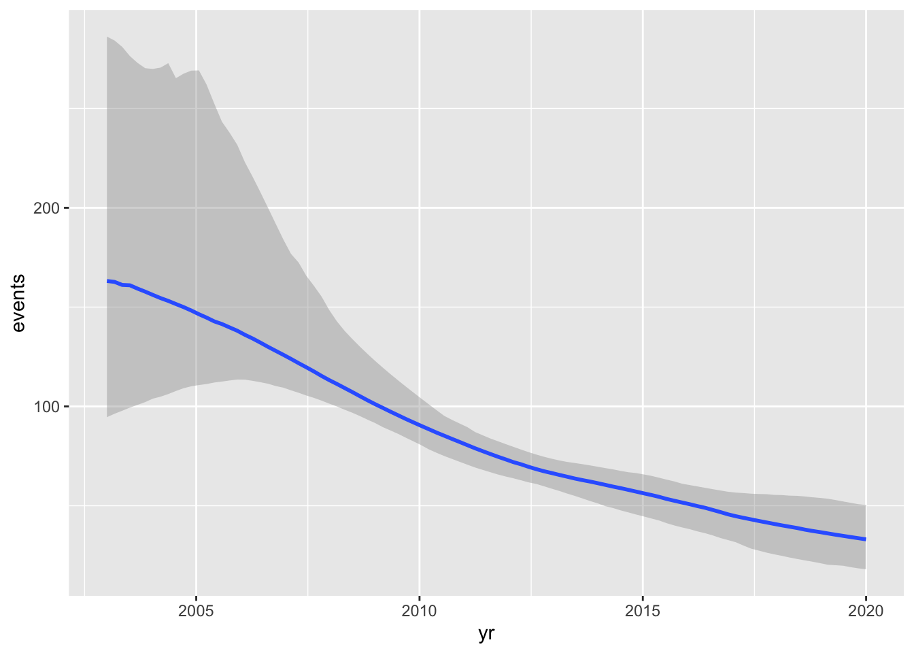
tibble(yr = seq(from = 2002, to = 2025)) %>%
add_epred_draws(mod.spl) %>%
mean_qi(.epred) %>%
ggplot(aes(yr, .epred)) +
geom_line() +
geom_ribbon(aes(ymin = .lower, ymax = .upper), alpha = 1/5) +
theme_classic()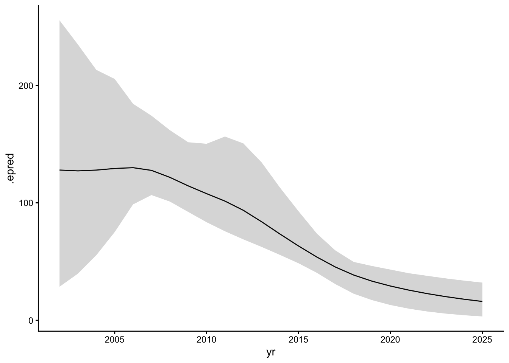
mod.spl2 <- brm(events~ yr + s(yr), tt, family = poisson(), chains = 3, file = "models/mod.spl2")plot(conditional_effects(mod.spl2))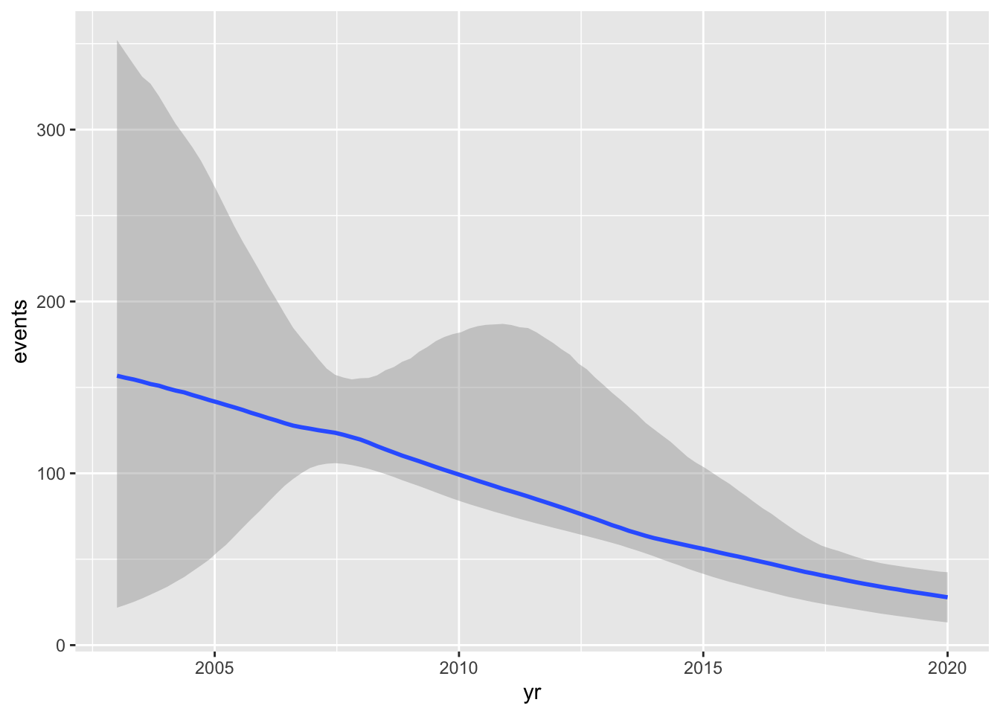
tibble(yr = seq(from = 2002, to = 2025)) %>%
add_epred_draws(mod.spl2) %>%
mean_qi(.epred) %>%
ggplot(aes(yr, .epred)) +
geom_line() +
geom_ribbon(aes(ymin = .lower, ymax = .upper), alpha = 1/5) +
theme_classic()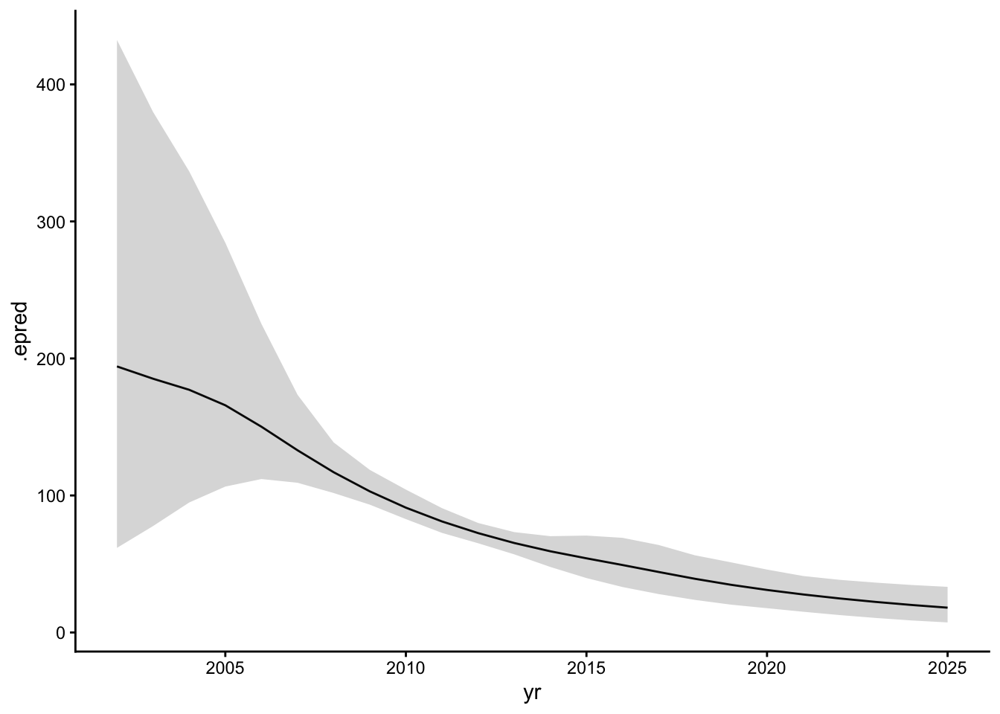
While spline models can implement complex nonlinear functions, they are less efficient in modelling effects of covariate interactions. GP is a principled, probabilistic approach to learn non-parametric models, where nonlinearity is implemented through kernels. GPs have become a popular method for non-parametric modelling, especially for time-series data, and a wide variety of kernel functions have been proposed for different modelling tasks. A GP model can be made additive by defining the kernel function to be a sum of kernels. Similarly, a product of two or more kernels is also a valid kernel.
a Gaussian process is a stochastic process (a collection of random variables indexed by time or space), such that every finite collection of those random variables has a multivariate normal distribution, i.e. every finite linear combination of them is normally distributed. The distribution of a Gaussian process is the joint distribution of all those (infinitely many) random variables, and as such, it is a distribution over functions with a continuous domain, e.g. time or space. Gaussian processes can be seen as an infinite-dimensional generalization of multivariate normal distributions. A Gaussian process can be used as a prior probability distribution over functions. For solution of the multi-output prediction problem, Gaussian process regression for vector-valued function was developed. In this method, a ‘big’ covariance is constructed, which describes the correlations between all the input and output variables taken in N points in the desired domain.
Realizations from a GP correspond to random functions and GPs naturally provide a prior for an unknown regression function that is to be estimated from data. GPs differ from standard regression models in that they define priors for entire nonlinear functions, instead of their parameters. While nonlinear effects can be incorporated into standard linear models by extending the basis functions e.g. with higher order polynomials, GPs can automatically detect any nonlinear as well as ns effects without the need of explicitly defining basis functions.
GP models can be made more flexible and interpretable by making them additive, where the kernel (covariance) is a sum of kernels (covariances) and each kernel models the effect of individual covariates or their interactions, i.e. f(x) = f (1)(x) + … + f (D)(x). Intuitively one can think that each GP component f(j) now implements a nonlinear function that specifies the corresponding effect, and the overall effect of several covariates is then the sum of these nonlinear functions. This is achieved by using specific kernels for different types of covariates, such as squared exponential (se) kernel for continuous covariates, constant (co), binary (bi), and categorical (ca) kernels for discrete covariates, and products of these kernels for interaction terms. Moreover, ns signals can be accounted for by incorporating ns kernels.
Covariance (also called the kernel function) of the normal distribution defines the smoothness of the function f, i.e. how fast the regression function can vary. Intuitively speaking, although GP is defined such that any finite- dimensional marginal has a Gaussian distribution, GP regression is a non-parametric method in the sense that the regression function f has no explicit parametric form. More formally, GP contains countably infinite many parameters that define the regression function, which are the function values f at all possible inputs x 2 X.
A Gaussian Peocess is a stochastic process, which describes the relation between one or more predictors x and a response f(x), where d is the number of predictors. A GP is the generalization of the multivariate normal distribution to an infinite number of dimensions. Thus, it can be interpreted as a prior over functions. Any finite sample realized from this stochastic process is jointly multivariate normal, with a covariance matrix defined by the covariance kernel k_p(x), where p is the vector of parameters of the GP:
\[f(x) \sim MVN(0, k_p(x))\]
The smoothness and general behavior of the function f depends only on the choice of covariance kernel
mod.gp <- brm(events~ gp(yr), tt, family = poisson(), chains = 3, file = "models/mod.gp")conditional_effects(mod.gp)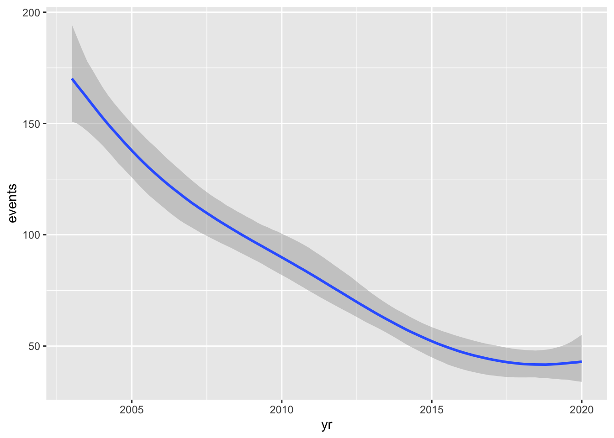
tibble(yr = seq(from = 2002, to = 2025)) %>%
add_epred_draws(mod.gp) %>%
mean_qi(.epred) %>%
ggplot(aes(yr, .epred)) +
geom_line() +
geom_ribbon(aes(ymin = .lower, ymax = .upper), alpha = 1/5) +
theme_classic()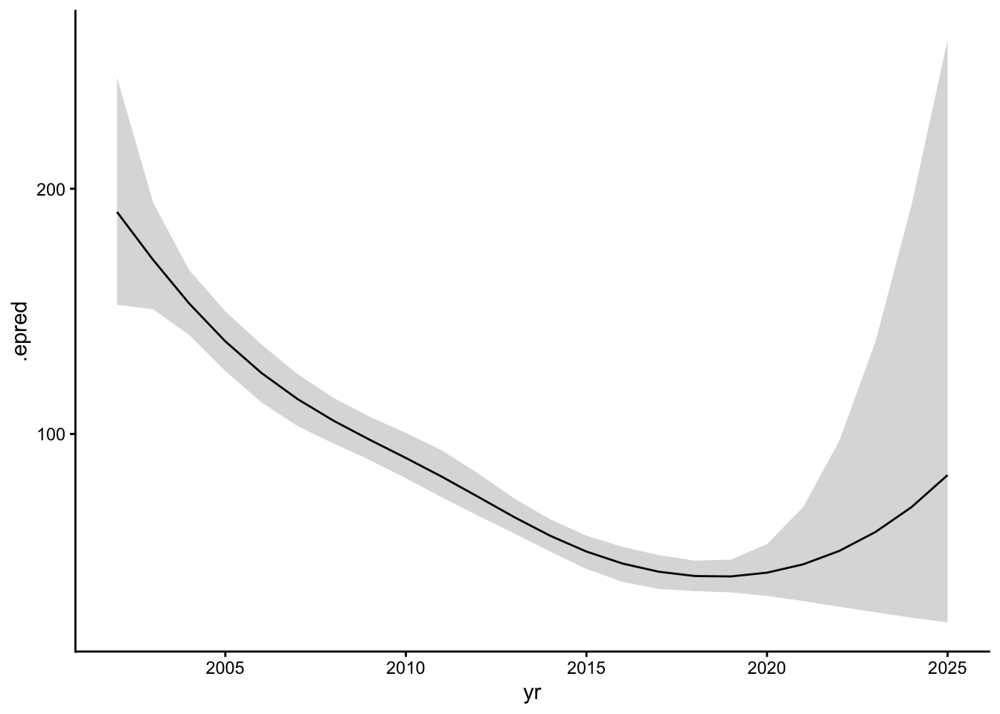
mod.gp2 <- brm(events~ yr + gp(yr), tt, family = poisson(), chains = 3, file = "models/mod.gp2")conditional_effects(mod.gp)tibble(yr = seq(from = 2002, to = 2025)) %>%
add_epred_draws(mod.gp2) %>%
mean_qi(.epred) %>%
ggplot(aes(yr, .epred)) +
geom_line() +
geom_ribbon(aes(ymin = .lower, ymax = .upper), alpha = 1/5) +
theme_classic()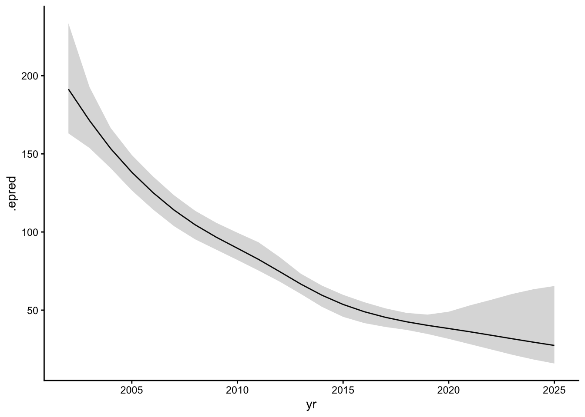
\(y = \beta_0 + \beta_1time + \beta_2time^2 + N(0, \sigma)\)
mod.poly <- brm(events~ poly(yr, 2), tt, family = poisson(), chains = 3, file = "models/mod.poly")
tibble(yr = seq(from = 2002, to = 2025)) %>%
add_epred_draws(mod.poly) %>%
mean_qi(.epred) %>%
ggplot(aes(yr, .epred)) +
geom_line() +
geom_ribbon(aes(ymin = .lower, ymax = .upper), alpha = 1/5) +
theme_classic()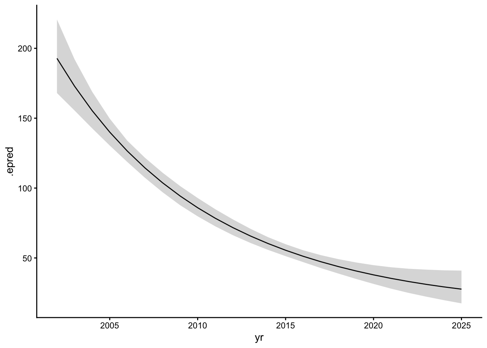
d <- read_delim("data/HF_data.csv",
delim = ";", escape_double = FALSE, trim_ws = TRUE)
d$dementia <- as.factor(d$dementia)
d <- d %>% mutate(year = year/mean(year))There were 481 divergent transitions. 2400 sec. rhat is very bad!
get_prior(data=d %>% filter(postacute_therapy>0),
bf(postacute_therapy~year*dementia ,
sigma~year*dementia))m_pt1 <- brm(data=d %>% filter(postacute_therapy>0),
bf(postacute_therapy~year*dementia,
sigma~year*dementia),
prior = prior(normal(0,10), class="b"),
chains=1, file="models/m_pt1")m_pt2 <- brm(data=d %>% filter(postacute_therapy>0),
bf(postacute_therapy~year*dementia + (year|county),
sigma~year*dementia + (year|county)),
prior= c(prior(normal(0, )),
prior())
cores=3, chains=3, file="models/m_pt1")m_pt5 <- brm(data=d %>% filter(postacute_therapy>0),
postacute_therapy~year*dementia + (year|county),
family = lognormal(), cores=1, chains=1,
file = "models/m_pt5"
)conditional_effects(m_pt5, effects = "year:dementia", conditions = make_conditions(d, "county"), re_formula = NULL)